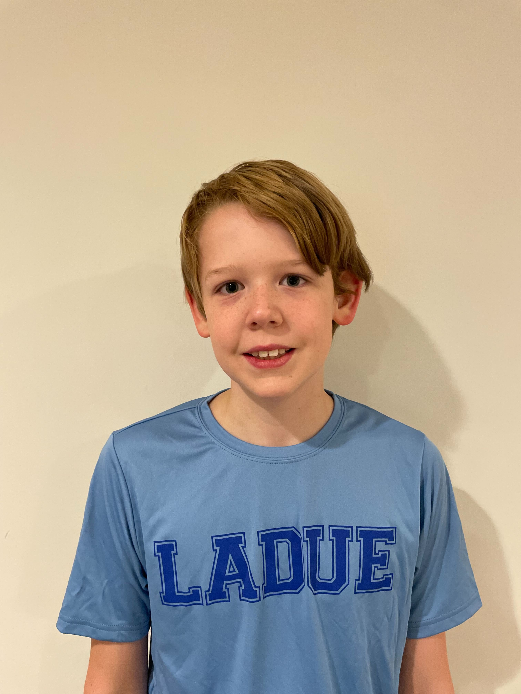
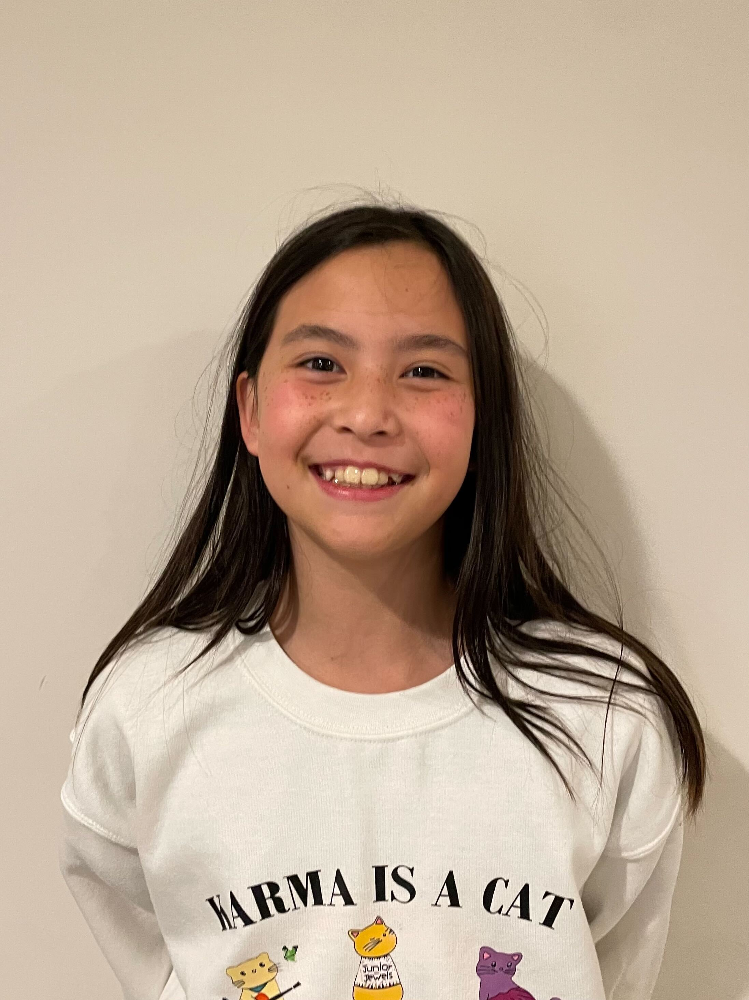
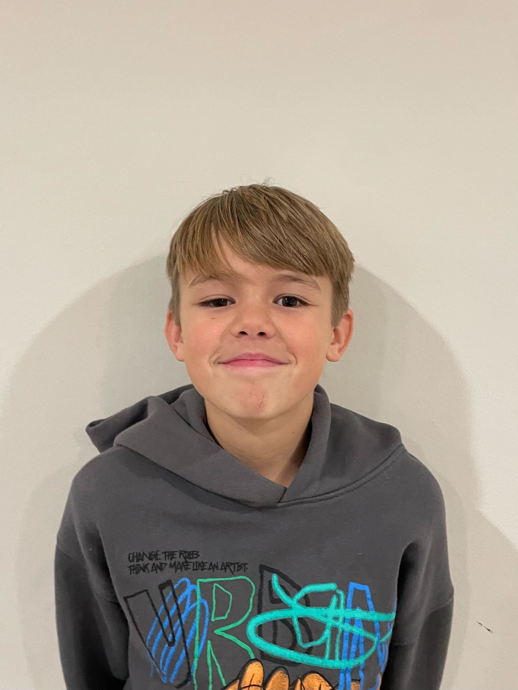
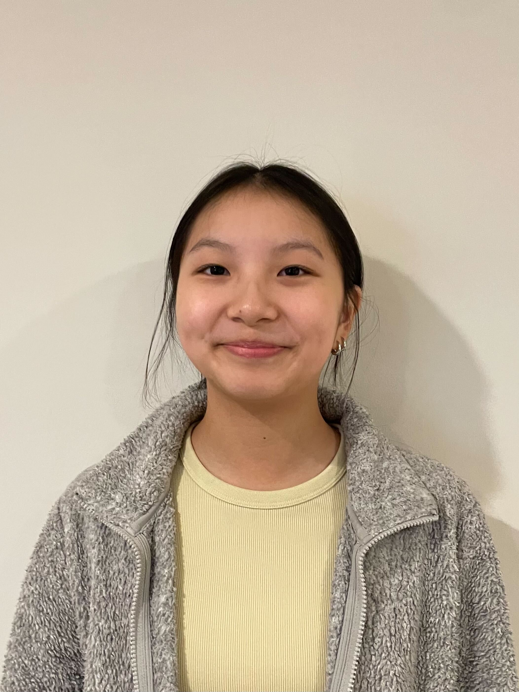
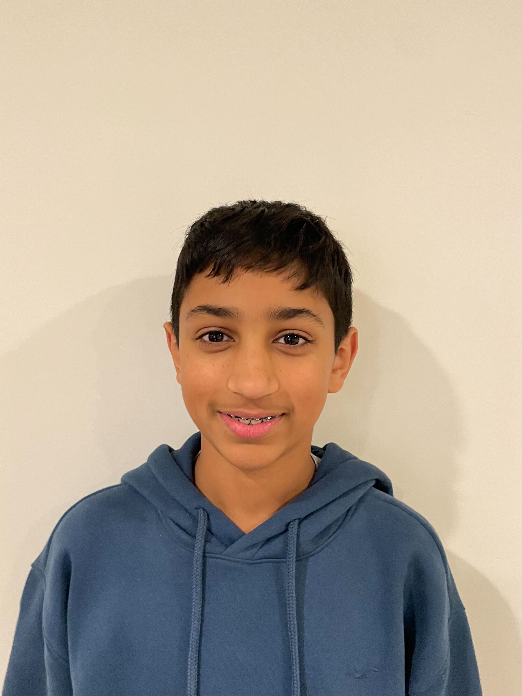

The Golden Shield Robotics team comprises elementary and middle school students committed to providing agricultural sustainability solutions using innovation and technology. They make valuable contributions by using marigolds and other natural repellents to reduce the application of chemical pesticides, thus preventing harmfully negative pesticide runoff that hurts marine life. Using robotics with nature conservation methods can help protect crops, preserve ecosystems, and make farming communities more sustainable.
Anjney Kumar, Blue team coder and website builder

Easton Henry, Red team coder, and robot attachment builder

Graham Labs, Assistant Blue team coder and assistant website builder
Mayuri Amarakone, Head researcher and Robot Set Up crew

Carolyne, Assistant researcher, and Robot builder
Hugh Burkhart, Head Blue team builder
Louden Burkhart, Blue team builder
August, Head setup crew for blue team and researcher
Madeline Fong, Head Project Coach
Rishi Suri, Head Robot Coach
Roy Zhu, Head Presentation Mentor